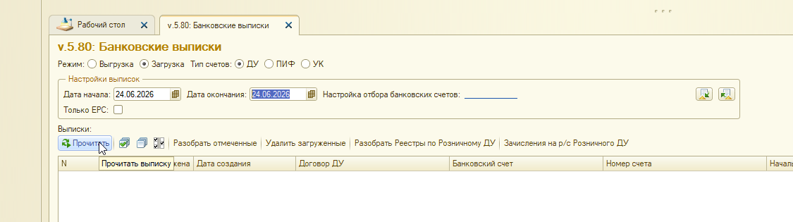
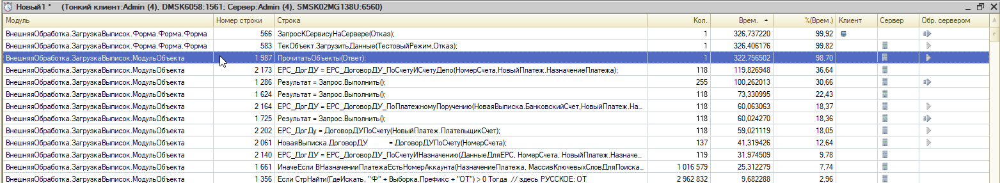
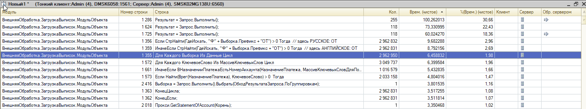
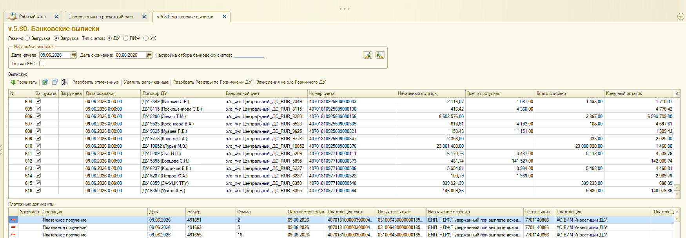
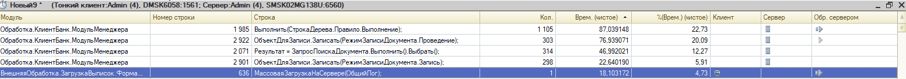

IMDEV-9096: места оптимизации алгоритмов 1С (загрузка выписок)
Область анализа: загрузка и разбор банковских выписок в Wim_Du без учета web-service
(исключены GetStatementOfAccount, WSDL, сетевые задержки). Объекты: EPF внЗагрузкаВыписокДУ, CF Обработка.КлиентБанк,
Справочник.НаборыПравилРазбораБанковскойВыписки.
Источники кода в репозитории:
Baseline (замеры «было»): bases/Wim_Du/projects/IMDEV-9096 Выписки/erf_Оптимизация/внЗагрузкаВыписокДУ_epf/
Рабочая ветка (оптимизации): bases/Wim_Du/projects/IMDEV-9096 Выписки/erf_Оптимизация_Тест1/внЗагрузкаВыписокДУ_epf/
CF: C:\1c\Cursor_1c\WORK\Wim_Du\SRC\CF\DataProcessors\КлиентБанк\,
...\Catalogs\НаборыПравилРазбораБанковскойВыписки\ Связанные документы:optimization_plan.html (рабочий план блоков 1–2),
mass_load_parallel_background_spec.html (ТЗ фоновой загрузки)
Обновлено по замерам отладчика (замерОтладчика_было.docx, IMDEV-9096, 2026-06).
Теоретические оценки SQL-кратности (разделы 2.1, 3.1) дополнены фактическими % времени.
Приоритеты OPT-* пересмотрены: в EPF доминирует цепочка ЕРС; в КлиентБанк — правила Выполн() и проведение.
Рекомендации OPT-17, OPT-05, OPT-18 синхронизированы с optimization_plan.html (2026-06-25).
0. Статус реализации (erf_Оптимизация_Тест1)
Детальные планы и критерии приёмки — в optimization_plan.html.
Здесь — сводка по блоку «Прочитать» (EPF).
OPT-ID
Запрос / объект
Baseline
Статус в Test1
Маркер в коде
Замер «стало»
OPT-02
Запрос 1: ДоговорДУПоСчету
255 SQL, 30,66%
Реализовано — пакетный кэш, 1 SQL на ответ
IMDEV-9096 ++ OPT-02
ожидает замера
OPT-17
Запрос 2: ЕРС_ДоговорДУ_ПоСчетуИСчетуДепо
118 SQL, 22,43% (стр. 1624)
Реализовано — ленивый кэш по НомерСчета
IMDEV-9096 [OPT-Запрос2]
ожидает замера
OPT-05
Запрос 3: ЕРС_ДоговорДУ_ПоПлатежномуПоручению
118 SQL, 18,36%
не начато
—
—
OPT-18
Запрос 4: ЕРС_ДоговорДУ_ПоСчетуИНазначению
~3M итераций, ~7,2%
не начато
—
—
OPT-03
Цепочка ERS в ПрочитатьОбъекты
~60–120 с на 118 платежей
не начато
—
—
OPT-13
Фоновая параллельная загрузка
~383 с / 12 выписок
не начато (есть ТЗ)
—
—
Собранный EPF:erf_Оптимизация_Тест1/внЗагрузкаВыписокДУ.epf (компиляция WIM_DU, без ошибок).
Следующий шаг — повторный замер «Прочитать» 1 день для подтверждения эффекта OPT-02 + OPT-17.
1. Замеры отладчика (базовая линия «было»)
Источник: bases/Wim_Du/projects/IMDEV-9096 Выписки/замерОтладчика_было.docx.
Два сценария на тестовой базе Wim_Du.
1.1. Сценарий «Прочитать» — 1 день (24.06.2026)

Форма: режим Загрузка, ДУ, период 24.06.2026 — 1 день
Уровень
Строка
Код
Кол.
Время, с
%
Форма
566
ЗапросКСервисуНаСервере(Отказ)
1
326,74
99,92
Форма
583
ТекОбъект.ЗагрузитьДанные(...)
1
326,41
99,82
ObjectModule
1987
ПрочитатьОбъекты(Ответ)
1
322,76
98,70

Детализация внутри ПрочитатьОбъекты (топ по % времени)
Контекст сценария: ~137 выписок, ~118 ЕРС-платежей (по кратности вызовов).
Web GetStatementOfAccount — 3,35 с (1,02%), не доминирует. Узкое место — разбор на сервере.
Строка
Процедура / операция
Кол.
Время, с
%
Вывод
2173
ЕРС_ДоговорДУ_ПоСчетуИСчетуДепо(...) — вызов функции
118
119,83*
36,64*
Тяжелый JOIN + цикл сопоставления на каждый ЕРС-платеж
1286
ДоговорДУПоСчету — Запрос.Выполнить()
255
100,26
30,66
N+1: ~137 выписок + ~118 fallback
1624
ЕРС_ДоговорДУ_ПоСчетуИСчетуДепо — SQL внутри функции
118
73,33
22,43
Официальная строка в docx; тот же JOIN
2164
ЕРС_ДоговорДУ_ПоПлатежномуПоручению(...)
118
60,06
18,37
Широкий запрос ПП ±5 дней + цикл 1С
1725
ЕРС_ДоговорДУ_ПоПлатежномуПоручению — SQL
118
60,02
18,36
Дублирует строку выше (вызов + запрос)
2202
ДоговорДУПоСчету(ПлательщикСчет) — ERS fallback
118
59,02
18,05
Повторный SQL после неудачной цепочки
2061
ДоговорДУПоСчету(НомерСчета) — на выписку
137
41,32
12,64
SQL на каждую выписку
2140
ЕРС_ДоговорДУ_ПоСчетуИНазначению(...)
119
31,97
9,78
In-memory, но дорогой цикл
1355–1359
СтрНайти в цикле Для Каждого Выборка Из Данные
~2 962 950
~24,9
~7,2
СтрНайти: 18,5 с + цикл 1355: 6,46 с; O(платежи x договоры)
1661
ВНазначенииПлатежаЕстьНомерАккаунта
1 016 579
25,31
7,74
Миллионы итераций по ключевым словам
* Строка 2173 (119,83 с / 36,64%) — из детализации профайлера (время всей функции включая цикл сопоставления).
В замерОтладчика_было.docx зафиксирована только SQL-строка 1624 (73,33 с / 22,43%).
Для оптимизации OPT-17 целевая метрика — снижение числа вызовов SQL на стр. 1624.

Три SQL (стр. 1286, 1624, 1725) дают ~71% чистого времени в детализации ObjectModule
Коррекция теоретического плана:БанкXDTO и ИдентифицироватьПлатежине попали в топ-10 замера «Прочитать» за 1 день. Для ЕРС-сценария приоритет — цепочка
ЕРС_ДоговорДУ_* и кэш ДоговорДУПоСчету, а не банки по БИК.
1.2. Сценарий «Разобрать отмеченные» — 1 день (09.06.2026)

12 выписок за 09.06.2026, кнопка «Разобрать отмеченные»
Оценка полного времени сценария: ~383 с (по доле топ-строки 87 с / 22,73%).
Модуль
Строка
Код
Кол.
Время, с
%
КлиентБанк
1985
Выполнить(СтрокаДерева.Правило.Выполнение)
1 105
87,04
22,73
КлиентБанк
2922
Записать(РежимЗаписиДокумента.Проведение)
303
76,87
20,09
КлиентБанк
2071
ЗапросПоискаДокумента.Выполнить()
314
46,99
12,27
КлиентБанк
2901
Записать(РежимЗаписиДокумента.Запись)
298
22,61
5,91
EPF Форма
636
МассоваяЗагрузкаНаСервере(ОбщийЛог)
1
~18
4,73

КлиентБанк: правила + проведение + поиск документа — 55% суммарно
Коррекция теоретического плана: «5 SQL на строку» в РаспознатьДанныеВСтрокеДокумента
не доминирует в замере. На первом месте — Выполн() правил разбора (OPT-12),
затем проведение (OPT-08), затем один запрос поиска документа (OPT-04/10).
Нужен доп. замер в разрезе СтрокаДерева.Правило и СтрокаДокумента.ВидДокумента.
2. Общая схема процесса (2 контура)
flowchart TB
subgraph UI["Форма EPF: ЗагрузкаВыписок"]
A1["ЗапросКСервисуНаСервере"]
A2["МассоваяЗагрузка / РазобратьВыписку"]
end
subgraph EPF["EPF ObjectModule — разбор без записи в БД"]
B1["ЗагрузитьДанные"]
B2["ПрочитатьОбъекты"]
B3["ИдентифицироватьПлатежи"]
end
subgraph KB["CF КлиентБанк — запись документов"]
C1["РазобратьДанныеИмпорта"]
C2["ПроверитьЗаполнениеТаблицыДокументов"]
C3["Загрузить"]
C4["ПослеЗагрузкиВыписки"]
end
A1 --> B1
B1 -->|"без web: только ПрочитатьОбъекты"| B2
B2 --> B3
A2 --> C1
C1 --> C2
C2 --> C3
C3 --> C4
style B2 fill:#ffcdd2,stroke:#b71c1c
style B3 fill:#ffcdd2,stroke:#b71c1c
style C1 fill:#ffe0b2,stroke:#e65100
style C3 fill:#ffe0b2,stroke:#e65100
Граница оптимизации: этап ЗагрузитьДанные до вызова ПрочитатьОбъекты
и весь контур КлиентБанк — чистый 1С/SQL. Web-вызов между ними в этот документ не входит.
Реализовано (Test1): разделение на ПолучитьДанныеДепоПоСчету + НайтиДоговорВДанныхДепо; ленивый кэш КэшДепоПоСчету по НомерСчета (1 SQL на уникальный счёт). См. п. 1.2.
OPT-02
N+1EPF
ДоговорДУПоСчету ~1252, стр. 1286
30,66%, 255 SQL (137 выписк + 118 fallback)
Реализовано (Test1): пакетный кэш ЗаполнитьКэшДоговоровДУПоСчетам, 1 SQL на ответ. См. п. 1.1.
Кэш ПП по (БанковскийСчет, НачалоДня(Дата)). Заменить НАЧАЛОПЕРИОДА на диапазон по сырому полю. Не добавлять простой фильтр Номер = &Номер в SQL — в коде есть поиск номера как подстроки в назначении. См. п. 1.3.
OPT-03
SQL chainEPF
блок ERS в ПрочитатьОбъекты ~2140-2202
цепочка ~60-120 с на 118 платежей
Строгий ранний выход после первого найденного договора. Не вызывать fallback ДоговорДУПоСчету если уже есть результат отбора ЕРС.
OPT-12
CF
ВыполнитьПравилаПоДеревуПравил ~1985
22,73%, 1 105 вызовов Выполн()
Сначала замер в разрезе СтрокаДерева.Правило. Аудит «Набор правил ВТБ». Вынести тяжелые правила в код. Кэш дерева на (Счет, Событие).
OPT-08
CF
ЗаписатьОбъект ~2871, проведение стр. 2922
20,09% проведение + 5,91% запись
Пропуск перепроведения если данные не изменились. Минимизировать ОтменаПроведения + Запись + Проведение.
P0 Бывшие критичные (теория; снижены по замеру)
ID
Место
Файл / процедура
Проблема
Рекомендация
OPT-01
N+1EPF
ObjectModule.bsl БанкXDTO() ~1204
Теоретически ~600 SQL; в замере «Прочитать» не в топ-10
Кэш БИК — делать после P0 ERS, актуально для не-ЕРС сценариев
OPT-04
N+1CF
РаспознатьДанныеВСтрокеДокумента ~2014
Теоретически 5+ SQL; в замере доминирует только поиск документа (12,27%)
Пакетный кэш контрагентов/счетов. Доп. замер по ВидДокумента
Извлечь из назначения токены Ф…ОТ / Ф…OT, затем lookup в КартаПрефиксов(Префикс -> ДоговорДУ) за O(1). Не прямой ключ "Ф"+Префикс+"ОТ" — префикс заранее неизвестен. См. п. 1.4.
OPT-19
замер CF
Выполнить(Правило.Выполнение) ~1985
22,73% суммарно, но неизвестно какое правило
Добавить замер в разрезе СтрокаДерева.Правило и ВидДокумента перед правкой правил.
OPT-10
CF
РаспознатьДанныеВСтрокеДокумента ~2071
ЗапросПоискаДокумента — 12,27%, 314 вызовов
Два статических запроса (Списание/Поступление). Пакетный поиск документов по списку ключей до цикла.
OPT-13
EPF
МассоваяЗагрузкаНаСервере ~636
12 выписок = 12 полных циклов КлиентБанк; деревья правил заново
Группировка по (БанковскийСчет, ДоговорДУ) + фон (IMDEV-9096). Один Разобрать+Загрузить на группу.
OPT-06
SQLEPF
ИдентифицироватьПлатежи ~2063
Не в топ-10 замера «Прочитать»
Упростить JOIN; актуально для сценариев с большим числом уже загруженных документов
OPT-07
O(n^2) EPF
ИдентифицироватьПлатежи ~2231
Не в топ-10 замера
Соответствие вместо НайтиСтроки
OPT-09
CF
РазобратьДанныеИмпорта ~1403
Выгрузить().Колонки — лишнее копирование
Фиксированный список полей
OPT-11
CF
Загрузить ~2771
UNION на удаление x выписка
Один запрос на группу выписок
P2 Средний приоритет
ID
Место
Файл / процедура
Проблема
Рекомендация
OPT-14
EPF
ПрочитатьОбъекты ~2049
ПлатежныеДокументы.НайтиСтроки для проверки пустой выписки — линейный поиск на каждую выписку.
Счетчик платежей по КлючВыписки в Соответствие при добавлении строк.
OPT-15
CF
РазобратьДанныеИмпорта ~1423
Цикл по всем колонкам таблицы на каждой строке (~50 колонок x N строк).
Рекурсивные SQL при построении дерева правил для групп.
Кэш дерева на сеанс по ключу (БанковскийСчет, ИмяРеквизита).
OPT-20
EPF
ВНазначенииПлатежаЕстьНомерАккаунта ~1571
1M+ вызовов, 7,74% в замере «Прочитать»
Нормализовать НазначениеПлатежа один раз; Соответствие ключевых слов; ранний выход
6. Дерево правил разбора (конфигурация)
flowchart TB
BS["БанковскиеСчета.ПравилаРазбораБанковскойВыписки"]
NP["НаборыПравилРазбораБанковскойВыписки"]
PR["Справочник.ПравилаРазбора (BSL в реквизитах Условие/Выполнение)"]
BS --> NP
NP --> E1["ПриРазбореСтрокиВыписки"]
NP --> E2["ПослеЧтенияВыписки"]
NP --> E3["ПередЗагрузкойДокумента"]
NP --> E4["ПриЗагрузкеДокумента"]
NP --> E5["ПослеЗагрузкиДокумента"]
NP --> E6["ПослеЗагрузкиВыписки"]
E1 --> PR
E2 --> PR
E3 --> PR
E4 --> PR
E5 --> PR
E6 --> PR
E1 -.->|"x N платежей"| V["Выполн()"]
E3 -.->|"x N документов"| V
E4 -.->|"x N документов"| V
E5 -.->|"x N документов"| V
OPT-12 (правила): события ПриРазбореСтрокиВыписки, Перед/При/ПослеЗагрузкиДокумента
умножают стоимость обработки на число платежей. Аудит содержимого «Набор правил ВТБ» обязателен перед оптимизацией кода EPF/КлиентБанк.
7. Рекомендуемый порядок работ (скорректирован по замерам)
Замеры «было» (выполнено) — базовая линия в разделе 1 (замерОтладчика_было.docx).
OPT-02 + OPT-17 (выполнено в Test1) — кэш ДоговорДУПоСчету и ленивый кэш депо.
Следующий шаг: повторный замер «Прочитать» 1 день.
OPT-19 — детальный замер правил по СтрокаДерева.Правило и запроса документов по ВидДокумента (перед правкой CF).
OPT-03 + OPT-20 — цепочка ЕРС (ранний выход, порядок эвристик)
OPT-01 — кэш БИК (для не-ЕРС сценариев)
Контур «Разобрать» (КлиентБанк, ~383 с на 12 выписок):
OPT-12 — аудит и оптимизация правил (22,73%)
OPT-08 — сокращение перепроведения (26% на запись+проведение)
OPT-10 + OPT-04 — поиск документа и пакетные кэши (12,27%+)
OPT-13 / IMDEV-9096 — группировка и фоновый пул
OPT-06, OPT-07 — по результатам замеров на сценариях с повторной загрузкой.
Ожидаемый эффект (оценка, до замера «стало»): OPT-02 + OPT-17 (реализованы) могут сократить
«Прочитать» с ~323 с до ~150–200 с. После OPT-05 + OPT-18 — целевые ~80–120 с (см. optimization_plan.html).
Оптимизация топ-3 в КлиентБанк — с ~383 с до ~200-250 с на аналогичном пакете.
Точные цифры — только после повторного замера.
8. Справочник процедур с номерами строк (EPF dump)